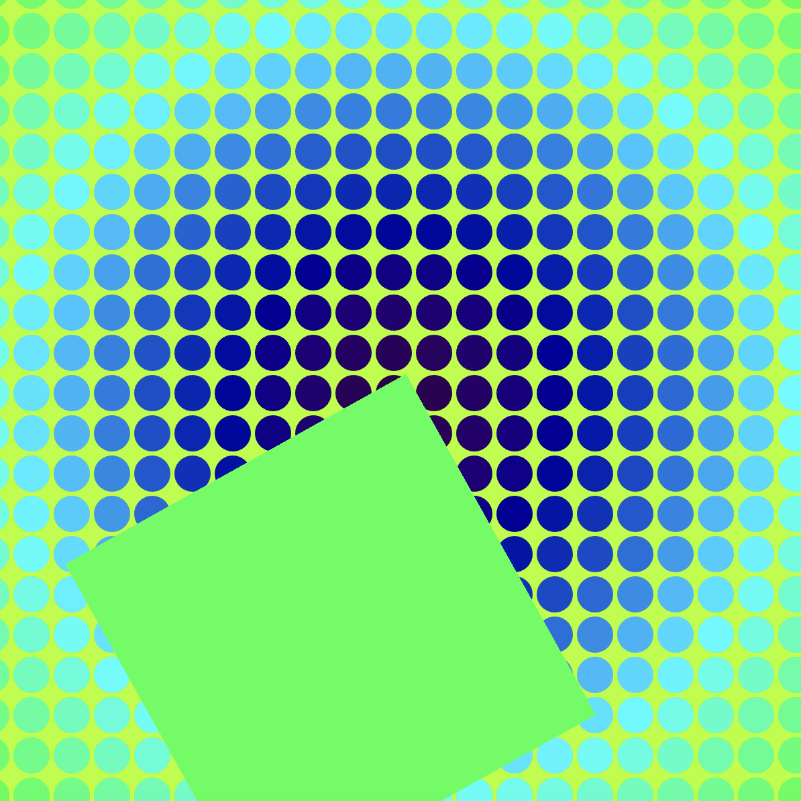
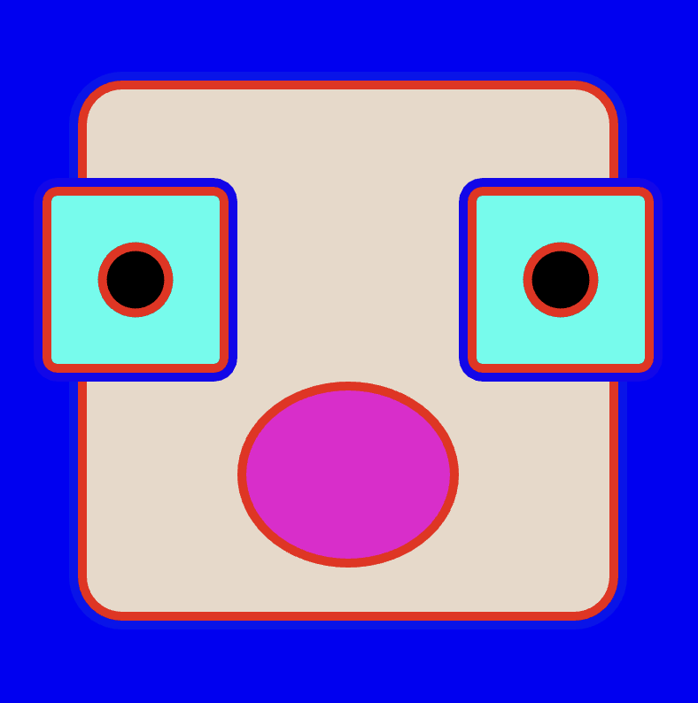
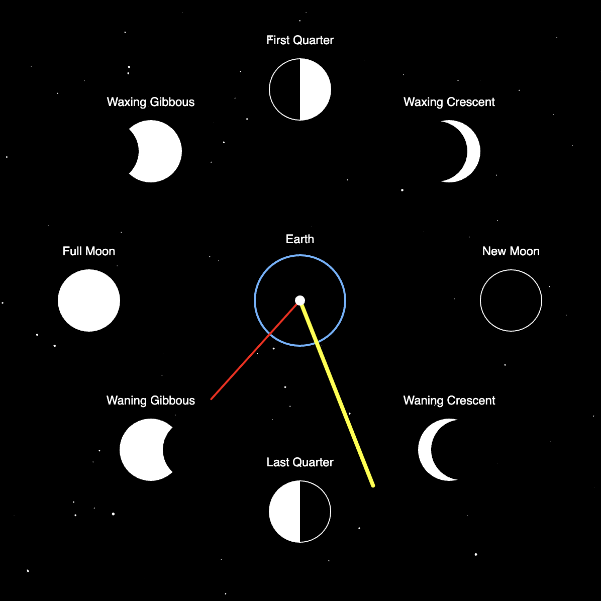
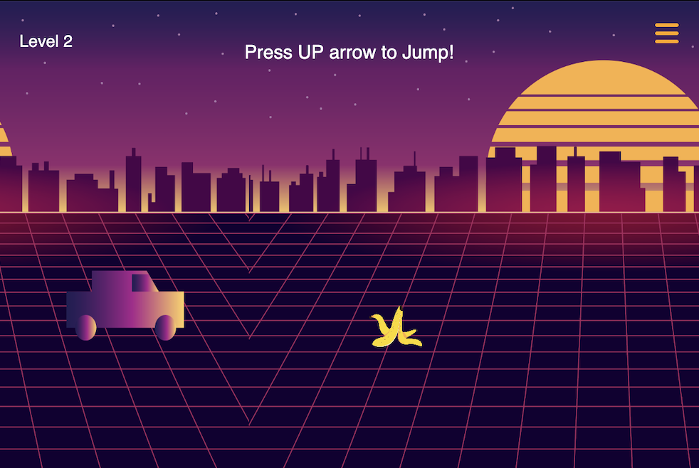

Optical Illusion
Using For Loops and Nested Loops, I got inspired by Vasarely's work to recreate this illusion in reference to his collaboration with David Bowie on a LP cover in 1969.

Face Generator
Based on simple shapes, I experimented with all the variables and randomness of elements I could use. This being one of my first coding projects, I've realized that with very simple shapes and tools, you can always end up doing something interesting. Just because you're not a coding pro doesn't mean you can only do boring stuff.

Experimental Clock
Ever since I was a kid, my mood, sleep cycles and energy level were irregular in a way I couldn't comprehend, until my mum some day told me after I suffered from an insomnia "it's because yesterday was a full moon". She turned out to be right. Every time I suffered from insomnia and would check the moon cycle, it was a full moon.

Autobiographical Game
In my friends group, I am the designated driver. As much as driving in Lebanon is insane and people hate it as it drives them crazy, I actually enjoy it so much as it takes the focus off my hyperactive brain and I get to drive around with my favorite music playing in the background.
SELECTED WORKS >
Critical Computation
Théa Chammas